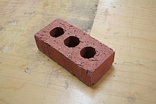

Activities
Activity-1: Some Objects to Contemplate
How many different uses can you imagine for each of these objects? Can you briefly describe and quickly sketch a few ideas?

Activity-2: Some Shapes to Contemplate
Where do you reckon you can “see” these shapes ? Can you briefly describe and quickly sketch a few ideas?

Figure 1: Images by rawpixel.com

Figure 2: Images by rawpixel.com
Scoring your Ideas
Scoring is comprised of four components:
- Fluency - total. Just add up all the responses. In this example it is 6.
- Flexibility - or different categories of ideas or, as Csikszentmihalyi would have us say, DOMAINS. Is your brick a Toy? Can it be used as…a Horticultural support thing? That is two domains, so two points.
- Elaboration - amount of detail (for Example: “in a bonsai” = 0, whereas “in a bonsai to create a root-over-rock structure as an island” = 2 (one for root-over-rock, two for further detail about the island structure).
- Originality - each response it compared to the total amount of responses from all of the people you gave the test to. Responses that were given by only 5% of your group are unusual (1 point), responses that were given by only 1% of your group are unique - 2 points). Total all the points. Higher scores indicate creativity*
*You might have noticed that the higher fluency the higher the originality (if you did “good for you!”) This is a contamination problem and can be corrected by using a corrective calculation for originality (originality = originality/fluency).
Discussion
Both these activities are examples of exercises in divergent thinking. See the references for more information.
- Did you use the words “as” and “like” to describe your ideas?
- Did you not use these words to describe your ideas?
- Were there, in your opinion, any outrageous ideas presented? Why were they outrageous?
- Are metaphors more interesting when they are surprising?
- How did the attributes of the objects ( shape , texture, size, weight, orientation…) get embedded in the ideas presented?
- Were these “embeddings” meaningful? How and why so? (Ask Bourdieu !!)
Activity-3: Gangs of Wasseypur
We will divide into two groups (four if necessary) and contemplate a brief description of the city of Wasseypur. There are 4 short questions / problems for you to consider at the end.
Activity-4: Seymour Papert Constructionism Game
Activity-5: C’est ne une Pipe
- We will break up into groups of 4-5.
- Each group will be given a household object, perhaps an unusual one.
- You need to imagine a use for it that is not what is the common known one.
- Market it as a product that serves this new purpose. Make an ad.
- Use only Gen Z language in your ad.
- Ad = Performance/Jingle + Poster